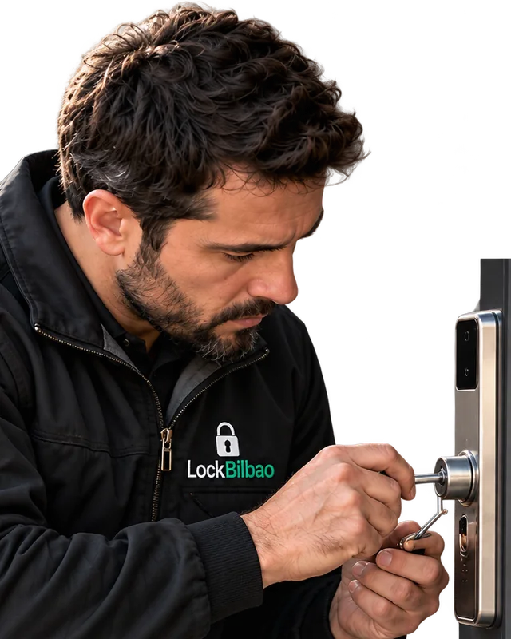
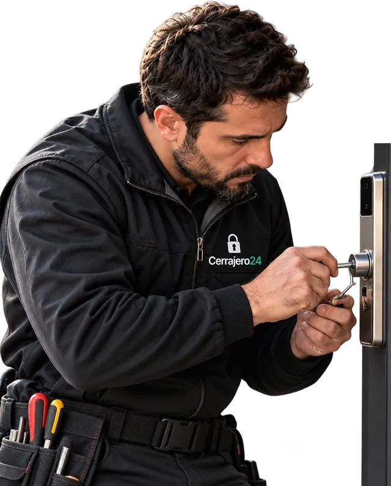

- Работаем 24/7Ночью, в выходные и праздники
- Бережное открытие дверейСначала пробуем сохранить замок
- Стоимость — до начала работНазываем заранее, без сюрпризов
Когда нужна помощь
Когда требуется аварийное открытие двери квартиры?
Наши мастера помогают в ситуациях, когда невозможно самостоятельно открыть входную дверь или воспользоваться ключом.
-
Захлопнулась входная дверь
Дверь закрылась, а ключи остались внутри квартиры.
-
Потеряли ключи от квартиры
Невозможно попасть домой, запасного комплекта нет.
-
Заклинило дверной замок
Ключ не поворачивается или замковый механизм перестал работать.
-
Сломался ключ в замке
Часть ключа осталась внутри цилиндра и мешает открыть дверь.
-
Ключ остался с внутренней стороны
Запасной ключ есть, но открыть дверь снаружи не получается.
-
Не открывается бронированная дверь
Неисправность запирающего механизма или защитной системы.
Не знаете причину неисправности? Позвоните мастеру.
Опишите, что происходит с дверью, — подскажем, что делать до приезда.
Цены
Сколько стоит открытие двери квартиры в Бильбао?
Стоимость зависит от типа двери, замка, сложности неисправности и времени обращения. Предварительную цену уточняем до начала работ.
| Услуга | Стоимость |
|---|---|
| Открытие захлопнувшейся двери | от … € |
| Открытие квартиры при потере ключей | от … € |
| Открытие двери с ключом внутри | от … € |
| Открытие заклинившего замка | от … € |
| Открытие бронированной двери | от … € |
| Извлечение сломанного ключа | от … € |
| Срочное открытие квартиры ночью | уточняется |
| Выезд мастера по Бильбао | уточняется |
- Выезд мастера
- Стоимость выезда по Бильбао и в Гран-Бильбао диспетчер называет при звонке, до того как мастер выедет.
- Ночной и праздничный тариф
- Действует ночью с 22:00 до 08:00, в выходные и праздничные дни. Размер доплаты называем заранее.
- IVA (НДС)
- [Указать, включён ли IVA в цены из таблицы.]
- Цилиндр и материалы
- Если понадобится новый цилиндр или другие детали, их стоимость оплачивается отдельно — только с вашего согласия.
- Окончательная стоимость
- Мастер называет её после осмотра двери и замка — до начала работ.
Из чего складывается цена
Как рассчитывается стоимость открытия дверного замка?
Цену определяют четыре параметра. Назовите их диспетчеру или пришлите фото замка — ориентировочную стоимость вы узнаете ещё до выезда мастера.
-
Тип входной двери
Деревянная, металлическая, бронированная или усиленная дверь.
-
Тип и состояние замка
Цилиндровый, сувальдный, многозапорный или электронный механизм.
-
Характер неисправности
Захлопнувшаяся дверь, потерянный ключ, заклинивание или поломка замка.
-
Время и адрес вызова
Дневной или ночной выезд, район Бильбао или муниципалитет в пригороде.
-
Итоговая цена
Мастер называет её после осмотра и до начала работ — без вашего согласия работы не начинаются.
Если после открытия нужны дополнительные работы или материалы, например новый цилиндр, их стоимость согласовываем отдельно — до начала работ.
Вызов мастера
Не можете попасть в квартиру? Вызовите мастера
Оставьте имя и номер телефона — диспетчер перезвонит в течение нескольких минут, уточнит адрес и ситуацию и назовёт ориентировочную стоимость. Работаем круглосуточно в Бильбао и Гран-Бильбао.
Двери и замки
Открытие входных дверей квартир любых основных типов
Работаем с различными конструкциями входных дверей и замков. Перед открытием специалист оценивает механизм и выбирает подходящий способ работы.
-
Открытие металлических дверей
Входные металлические двери с цилиндровыми и многозапорными замками.
-
Открытие бронированных дверей puertas acorazadas
Усиленные двери с дополнительной защитой и сложными запирающими механизмами.
-
Открытие деревянных дверей
Входные двери старых квартир и жилых домов, в том числе в Каско-Вьехо и Абандо.
-
Открытие дверей с цилиндровыми замками bombín
Стандартные и защитные цилиндровые механизмы.
-
Открытие дверей с сувальдными замками de gorjas
Замковые системы различных производителей и классов защиты.
-
Открытие электронных замков
Двери с электронными и интеллектуальными системами доступа.

Бережное открытие
Аварийное открытие квартиры без повреждения двери и замка
Наша задача — восстановить доступ в квартиру и по возможности сохранить входную дверь и замковый механизм.
Когда замок остаётся рабочим
Если дверь захлопнулась на защёлку, а цилиндр исправен, её почти всегда удаётся открыть без разрушения. После открытия замок продолжает работать с вашими ключами.
Почему всё зависит от конструкции двери
Бронированное полотно, многозапорный механизм и цилиндры высокого класса защиты специально сопротивляются вскрытию. Чем сложнее конструкция, тем больше времени и специального инструмента нужно мастеру.
Когда может понадобиться замена цилиндра или замка
Если цилиндр сломан, ключ обломан глубоко внутри, механизм изношен или дверь закрыта на ключ, который остался по ту сторону, иногда быстрее и надёжнее заменить личинку. Новый цилиндр мастер ставит в тот же визит.
Почему возможные повреждения согласовываем заранее
Высверливание или замену мастер не начинает без вашего согласия: сначала объясняет, почему механизм не сохранить, какой способ он выбирает и сколько это будет стоить.
Что проверяем после открытия
Как дверь открывается и закрывается, поворачивается ли ключ с обеих сторон, работают ли защёлка и ригели. Если что-то заедает, предлагаем ремонт сразу, пока мастер на месте.
Процесс
Как вызвать мастера для открытия квартиры в Бильбао?
-
Обращение
Позвоните или оставьте заявку. Сообщите адрес и причину, по которой дверь не открывается.
-
Консультация и стоимость
Специалист уточняет тип замка, определяет предварительную стоимость и согласовывает условия выезда.
-
Открытие двери
Мастер прибывает на объект, проверяет право доступа к квартире и выполняет согласованные работы.
-
Проверка результата
Проверяем открытие и закрытие двери, работу механизма. При необходимости предлагаем ремонт или замену замка.
Дверь не открывается прямо сейчас?
Дежурный мастер на связи круглосуточно — в том числе ночью и в праздники.

Почему Cerrajero24
Преимущества нашей службы открытия квартир в Бильбао
-
Круглосуточная помощь
Принимаем обращения 24/7, включая выходные и праздничные дни.
-
Быстрый выезд по Бильбао
Помогаем во всех районах города. Конкретное время приезда согласуем с вами при звонке.
-
Бережная работа с дверью
По возможности применяем решения, которые сохраняют дверное полотно и замок.
-
Прозрачная стоимость
Заранее объясняем стоимость услуги и возможные дополнительные расходы.
-
Профессиональные мастера
Опыт работы с разными дверными механизмами и конструкциями.
-
Гарантия на выполненные работы
Гарантия на ремонт, установку и комплектующие. Условия фиксируем в документе после работ.
Отзывы
Отзывы клиентов об аварийном открытии квартир в Бильбао
5.0
70 отзывов в Google
Круглосуточно
Срочное открытие квартир в Бильбао круглосуточно 24/7
Проблемы с входной дверью могут возникнуть в любое время. Наша служба принимает обращения круглосуточно, включая ночное время, выходные и праздники.
Срочно открыть квартиру- Как заказать ночной выезд
- Позвоните на +34 944 123 456 — ночью отвечает дежурный диспетчер. Заявку с сайта мы тоже примем, но звонок быстрее.
- Отличается ли стоимость ночью
- Да: с 22:00 до 08:00, в выходные и праздники действует доплата. Её размер называем при звонке, до выезда мастера.
- Что сообщить при срочном вызове
- Адрес с этажом и кодом подъезда, что случилось с дверью и есть ли при вас документы.
- Куда выезжаем
- Во все районы Бильбао и в муниципалитеты Гран-Бильбао на обоих берегах Нервиона.
112Если в квартире человек в непосредственной опасности или есть риск пожара — сразу звоните в экстренные службы по номеру 112.
Законность и безопасность
Какие документы нужны для аварийного открытия квартиры?
Перед выполнением работ мастер должен убедиться, что у заказчика есть право доступа к помещению.
Подходят:
- DNI
- NIE
- Паспорт
- Empadronamiento
- Escritura
- Договор аренды
- Счёт за коммунальные услуги
Как подтвердить право проживания или собственности
Нужен документ с фото — DNI, NIE или паспорт — и бумага, которая связывает вас с адресом: справка о прописке (certificado de empadronamiento), escritura, договор аренды или счёт за коммунальные услуги на ваше имя.
Что делать, если документы остались в квартире
Предупредите об этом диспетчера заранее. Мастер откроет дверь и проверит документы сразу после открытия, до завершения работы. В спорных ситуациях проверка проходит в присутствии Policía Municipal или Ertzaintza.
Может ли арендатор заказать открытие двери
Да. Арендатору достаточно документа с фото и договора аренды (contrato de alquiler) или другой бумаги с его именем и адресом. Замену замка в арендованной квартире лучше согласовать с владельцем.
Почему мастер может отказаться от работы
Если подтвердить право доступа нельзя ни документами, ни другим способом, мастер вправе не открывать дверь. Это защищает и вас: посторонний не сможет вызвать слесаря к вашей квартире.
Как согласовываются работы с возможными повреждениями
Если открыть дверь без повреждений не получается, мастер объясняет причину и называет стоимость замены цилиндра или замка. Работы начинаются только после вашего согласия.
Районы выезда
Аварийное открытие квартир во всех районах Бильбао
Выезжаем для открытия входных дверей квартир в районах Бильбао и ближайших населённых пунктах Бискайи.
Карта зоны выезда загружается…
Зона выезда
Районы Бильбао
8 районов- Деусто
- Урибарри
- Очаркоага-Чурдинага
- Бегонья
- Ибайондо
- Абандо
- Рекальде
- Басурто-Сорроса
Популярные кварталы: Каско-Вьехо, Индаучу, Сан-Игнасио, Сантучу, Мирибилья и другие.
Открытие квартир в пригородах Бильбао
- Баракальдо
- Гечо
- Португалете
- Сантурци
- Лейоа
- Сестао
- Басаури
- Эрандио
и другие муниципалитеты Гран-Бильбао.
Выберите район Бильбао или муниципалитет, чтобы узнать, как уточнить время приезда.
Полезно знать
Что делать, если не получается открыть входную дверь квартиры?
Когда дверь не открывается, главное — не навредить ни замку, ни полотну. Рассказываем, как оценить ситуацию до приезда мастера, когда замок можно сохранить и что подготовить к вызову.
Что делать, если дверь захлопнулась, а ключи остались внутри?
Сначала проверьте, нет ли другого способа попасть домой: запасной комплект у родственников, соседей или администратора дома. Не пытайтесь отжать дверь ножом, пластиковой картой или отвёрткой — так легко повредить полотно, уплотнитель и защёлку, и вызов обойдётся дороже.
Позвоните мастеру и скажите, закрыта ли дверь только на защёлку или на ключ, — от этого зависит способ открытия. Ориентиры — в таблице цен.
Почему ключ не поворачивается в дверном замке?
Чаще всего причина в износе цилиндра, грязи в механизме, деформированном ключе или перекосе двери, из-за которого ригель упирается в ответную планку. Иногда замок заклинивает после попытки открыть его неподходящим ключом.
Не прилагайте силу: ключ, сломанный в цилиндре, усложнит открытие. Точную причину мастер определит на диагностике. Если причина в износе, поможет ремонт дверного замка.
Можно ли открыть квартиру без замены замка?
Да, если механизм исправен, а дверь захлопнута на защёлку или закрыта на стандартный цилиндр. Замена нужна, когда цилиндр сломан или изношен, внутри остался обломок ключа или замок иначе не открыть.
В этом случае мастер заранее объясняет, почему механизм не сохранить, и называет стоимость нового цилиндра. Подробнее — в разделе об открытии без повреждений.
Нужно ли менять замок после потери ключей?
Вернуть доступ в квартиру и обезопасить её — разные задачи. Если ключи потерялись вместе с документами или брелоком с адресом, ими может воспользоваться посторонний.
Тогда лучше сразу заменить цилиндр: это быстрее и дешевле, чем менять весь замок, а старые ключи перестанут подходить. Подробнее — о замене цилиндра замка.
Что необходимо подготовить до приезда мастера?
Точный адрес с этажом и кодом подъезда, краткое описание проблемы и, если получится, фото замка снаружи — по нему проще заранее оценить стоимость. Подготовьте документ, подтверждающий право доступа: DNI, NIE или паспорт и бумагу с адресом. Если документы остались внутри, предупредите диспетчера — мастер проверит их сразу после открытия. Какие бумаги подходят — в разделе о документах.
Вопросы
Часто задаваемые вопросы об аварийном открытии квартир
Сколько стоит аварийное открытие квартиры в Бильбао?
Цена зависит от типа двери и замка, причины, по которой дверь не открывается, времени вызова и адреса. Ориентиры по основным ситуациям — в таблице цен. Предварительную стоимость диспетчер называет по телефону, а окончательную — мастер после осмотра замка и до начала работ. Без вашего согласия работы не начинаются.
Как быстро приедет мастер для открытия двери?
Время приезда зависит от района, времени суток и загрузки дежурных мастеров. Диспетчер называет ориентировочное время сразу при звонке и предупреждает, если мастер задерживается. Быстрее всего мы добираемся в центральные районы Бильбао — Абандо, Индаучу, Каско-Вьехо; в муниципалитеты Гран-Бильбао дорога обычно занимает больше времени.
Можно ли открыть входную дверь без повреждения замка?
Чаще всего — да, особенно если дверь захлопнулась на защёлку, а цилиндр исправен. Бронированные двери и цилиндры высокого класса защиты иногда не позволяют сохранить механизм. Мы стремимся открыть дверь без повреждений, а если это невозможно, заранее объясняем причину и согласуем замену. Подробнее — в разделе об открытии без повреждений.
Что делать, если ключи остались внутри квартиры?
Не пытайтесь отжать дверь или замок: это может повредить полотно и усложнить открытие. Позвоните мастеру и скажите, закрыта ли дверь на ключ или только захлопнулась и остался ли ключ в замке изнутри. Подготовьте документ, подтверждающий адрес, — если он внутри, мастер проверит его сразу после открытия.
Открываете ли вы квартиры ночью?
Да, служба работает круглосуточно, включая выходные и праздники. Ночью с 22:00 до 08:00 и в праздничные дни действует доплата — её размер диспетчер называет при звонке, до выезда мастера. Ночью быстрее позвонить, чем оставлять заявку на сайте. Подробнее — в разделе о ночных вызовах.
Сколько времени занимает открытие входной двери?
Быстрее всего открывается дверь, которая просто захлопнулась на защёлку, со стандартным исправным цилиндром. Бронированная дверь, многозапорный замок или обломок ключа в цилиндре требуют больше времени. Точнее мастер скажет после осмотра. Если понадобится замена цилиндра, добавится время на установку нового — обычно в тот же визит.
Можно ли открыть бронированную дверь?
Да, мастера работают с бронированными дверями (puertas acorazadas) и многозапорными замками. Такие двери специально сопротивляются вскрытию, поэтому работа сложнее, а сохранить механизм удаётся не всегда. Перед началом мастер оценивает конструкцию и согласует с вами способ открытия и стоимость. Подробнее о типах дверей — в разделе о дверях и замках.
Что делать, если ключ сломался в замке?
Не пытайтесь достать обломок шпилькой, клеем или вторым ключом — так его легко протолкнуть глубже и повредить цилиндр. Если дверь открыта, не закрывайте её. Мастер извлечёт обломок специальным инструментом, проверит механизм и, если цилиндр пострадал, заменит его на месте. Подробнее — извлечение сломанного ключа.
Нужно ли менять замок после аварийного открытия?
Не обязательно. Если дверь открыта без повреждений и механизм исправен, достаточно проверить его работу. Замена нужна, если цилиндр повреждён или изношен, а также при потере ключей — чтобы старым комплектом никто не смог воспользоваться. Мастер подскажет, хватит ли замены личинки или нужен новый замок.
Какие документы нужны для открытия квартиры?
Документ с фото (DNI, NIE или паспорт) и подтверждение связи с адресом: empadronamiento, escritura, договор аренды или счёт за коммунальные услуги. Арендатору достаточно договора аренды и документа с фото. Если документы остались внутри, мастер проверит их сразу после открытия. Подробнее — в разделе о документах.
Можно ли заранее узнать стоимость по фотографии?
Да. Отправьте фото двери и замка в WhatsApp и коротко опишите проблему. Мастер определит тип механизма и назовёт ориентировочную стоимость. Лучше сделать два снимка: цилиндр крупным планом и дверь целиком. Окончательная цена подтверждается на месте после осмотра — до начала работ.
Выезжаете ли вы в пригород Бильбао?
Да. Кроме всех районов Бильбао выезжаем в муниципалитеты Гран-Бильбао: Баракальдо, Гечо, Португалете, Сантурци, Лейоа, Сестао, Басаури, Эрандио и другие. Стоимость и время приезда за пределы города зависят от расстояния — диспетчер назовёт их при звонке. Проверить свой район можно на карте выезда.
Ещё услуги
Другие услуги Cerrajero24 в Бильбао
-

Аварийное открытие автомобилей
Двери и багажники автомобилей разных марок.
от 45 € -

Открытие сейфов
Механические, кодовые и электронные сейфовые замки.
от 60 € -

Открытие гаражей и ворот
Гаражные замки, роллеты и запирающие механизмы.
от 90 € -

Открытие офисов и помещений
Офисы, магазины, склады и другие коммерческие объекты.
от 90 € -

Ремонт дверных замков
Заедание, поломка механизма, проблемы с ключом.
от 70 € -

Замена замков и личинок
Замена цилиндра, механизма или дверной фурнитуры.
от 70 € -

Установка и врезка замков
Монтаж новых и дополнительных замковых механизмов.
от 90 € -

Извлечение сломанного ключа
Диагностика и восстановление работоспособности замка.
от 60 €
Заявка на выезд
Вызвать мастера для открытия квартиры в Бильбао
Не можете попасть в квартиру? Свяжитесь с Cerrajero24, чтобы уточнить стоимость и заказать выезд специалиста.
- География: Бильбао и Бискайя
- Цену согласовываем до начала работ
- Стремимся открыть без повреждений